Tiempo restante: 45:00
Pregunta 1 de 40
El valor que cobra una empresa por podar el césped en áreas verdes es de 0.40 USD por cada metro cuadrado. Si un conjunto residencial tiene 2 espacios con áreas verdes de 75 metros de largo por 6 metros de ancho cada uno, determine el valor, en dólares, que debe pagar la administración
900Al soltar un péndulo se toman mediciones de la altura, en centímetros, en diferentes posiciones de cada oscilación como se muestra en la progresión:
√256; √64; √16; ___
¿Qué altura tendrá el péndulo en su cuarta oscilación?
1Un taller automotriz cuenta con 8 técnicos especializados que se demoran 4 horas en realizar 8 mantenimientos de distintos autos. Si el dueño del taller decide contratar a 1 técnico adicional, ¿cuántos mantenimientos se podrán realizar en 8 horas?
7Diana utiliza miel de abeja para complementar la alimentación de su hija. Para ello, realiza una tabla con los valores que recuerda y que forman una relación lineal.
| Cantidad de miel en el frasco (gr) | Días de consumo |
|---|---|
| 304 | 8 |
| 152 | 16 |
Para prever la compra de miel se debe tomar en cuenta que un frasco lleno tiene ____ gramos y dura ____ días.
608 ; 40Los meteorólogos aseguran que la probabilidad de que mañana el día esté nublado es del 5 %. Además, hay una probabilidad del 15 % de que llueva y un 80 % de que esté soleado. ¿Cuál es la probabilidad de que no llueva mañana?
80 %Para controlar el ingreso de buses a una terminal, una compañía coloca una maquina de boletos que entregan el código según el orden de llegada tal y como se muestra en la serie.
2C,4G,3K,50,4S,6W,------
Si al llegar el séptimo bus, la maquina sufre un apagón por un corto circuito determine el código que se deberá entregar a dicha unidad para no alterar el orden
5 AIdentifique la suma de los números dentro de los triángulos grises y dentro de los círculos negros, multiplicada por la suma de los números ubicados en los cuadrados blancos.
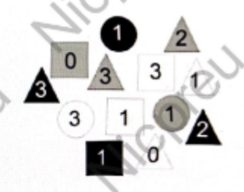
Una familia está conformada por 4 personas; papá, mamá y 2 niños, ellos utilizan el servicio de transporte urbano. El día lunes subieron en el bus papa y los 2 niños y pagaron 1 USD, El día martes utilizaron el bus papá, mamá y un niño y pagaron 1.25 USD. Si el pasaje de papá y mamá tiene el mismo valor, el pasaje de un adulto cuesta ___ USD y el de un niño cuesta ___ USD.
0.25; 0.75Una empresa establece en su normativa que se realizarán dos tipos de descuentos al salario. Juan tiene un mensual de 1500 USD y de este monto de descuenta el 6% por atrasos, además se elimina el 8% del restante por multas. Si Juan registra una multa y un atraso, determine la cantidad de dinero aproximando que recibirá al final del mes.
1387Un joven visita Las 700 Gradas, una localidad en la parroquia de Pifo. El sube hasta la grada 592, y para avanzar más rápido, decide dar pasos de 2 gradas. ¿En cuántos pasos de 2 gradas llegará a la cima?
54Una persona pretende obtener el modelo matemático de un circuito electrónico en serie con resistencia constante. Cuando alimenta el circuito con un voltaje de 9 V, mide que la corriente que circula es 2 A, mientras que, cuando alimenta el circuito con una fuente constante de 12 V, la corriente es 2,75 A. Si luego de otras mediciones se logra establecer que la relación entre la corriente y el voltaje es lineal, determine la variación de corriente por cada voltio de la fuente para que la persona pueda definir el modelado matemático del circuito.
1/4Identifique la paráfrasis correcta.
El cerebro no es un vaso por llenar, sino una lámpara por encender.
Aprender es un proceso que requiere presión externa.Con base en el caso, identifique el eslogan que emplea el nivel de lenguaje adecuado para el destinatario al que se dirige.
Una exclusiva firma de ropa para dama acaba de sacar al mercado una elegante línea de prendas que han sido diseñadas exclusivamente para la mujer oficinista. Los creativos encargados del marketing deben elegir una frase publicitaria para hacer el lanzamiento de este producto.
Diversión y comodidad para la gente súper pilas como tú, ven y atrévete a romper los esquemas y ser original.Los nuevos tiempos traen variedad de sabores. Existe un interés mundial en probar la cocina de otras culturas, Esto puede deberse a diversos factores como la migración y el estado de las telecomunicaciones, que nos presentan cada día más información sobre otras culturas, incluida su forma de preparar los alimentos.
Con base en el texto, relacione la palabra con su significado.
| Palabra | Significado |
|---|---|
| Cultura | a) Aparato para preparar alimentos |
| Cocina | b) Arte de guisar de cada país |
| c) Modo de vida y costumbre |
Con base en el texto, identifique el antónimo de la palabra marcada con negrita.
Bolivia es un país muy variado, localizado en América del Sur.
HomogéneoOrdene las proposiciones según la sintaxis de las oraciones simples.
1.El miércoles
2.Tus amigos
3.La Cima de la Libertad
4.Visitaron
Identifique la oración que cumpla las normas ortográficas.
La casa fue evacuada luego de los temblores nocturnosCon base en las premisas, identifique la conclusión.
Con base en el texto, identifique la tesis.
Investigadores españoles [...] han realizado un estudio sobre cómo reacciona el sisón, ave amenazada
durante el invierno, ante la presencia del hombre en ambientes cerealistas o medios agrarios
abiertos. El trabajo publicado en la revista Behavioral Ecology muestra que las aves tienen un nivel
de estrés fisiológico significativamente más alto durante el fin de semana que antes o después del
mismo.
"Los animales pueden percibir al hombre como una amenaza o un posible depredador. Por
ello, las actividades humanas que conlleven un contacto del hombre con la fauna silvestre pueden
causar estrés fisiológico y cambios de comportamiento en ese entorno", explica la investigadora del
CSIC Beatriz Arroyo [...] Este estudio ha constatado que durante los fines de semana hay una mayor
frecuencia de actividades humanas en las zonas agrícolas, incluida la presencia de cazadores, de
paseantes y de ciclistas. Para medir el nivel de estrés que llegan a generar estas actividades, los
investigadores han empleado una hormona, la corticosterona, presente en las heces de los sisones. El
análisis ha mostrado que el grado de estrés aumenta con la intensidad de las molestias,
particularmente las relacionadas con la caza (presencia de cazadores, perros o frecuencia de
disparos)." También hemos observado que durante los fines de semana los sisones pasan más tiempo
vigilando o volando, comportamientos que son típicamente antipredatorios. En cambio, tras el fin de
semana, dedican más tiempo a comer para recuperarse del gasto energético sufrido durante esos dos
días", comenta la investigadora.
Identifique el elemento metaforizado.
Lluvia, mar celestial,
número infinito de
hilos de cristal
recorriendo mi
ventana.
Composición efímera
de vitrales líquidos
en el cielo.
Espectáculo de agujas
líquidas
que acribillan la calzada.
Agua impulsiva
que cae de pronto
y calma la sed del
mundo.
¿Qué tipo de texto es?
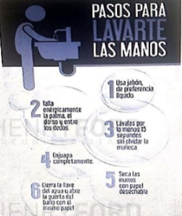
Identifique la oración que se encuentra sintácticamente ordenada.
Estuvieron investigando los futuros médicos diversas patologías en el laboratorio para encontrar posibles curasComplete el enunciado con el conector que indique explicación.
El montubio, _________ el campesino costeño, está presente de forma recurrente en la literatura ecuatoriana del realismo social.
tambiénComplete la analogía
Pausa es a ____________ como ____________ es a trabajo.
Descanso - eficienciaIdentifique el enunciado que contiene palabras homógrafas.
La alpaca escapó porque la cadena hecha de alpaca no pudo resistir la increíble fuerza del animalCon base en el texto, identifique la idea principal.
A pesar de ser un ecosistema que recibe agua de lluvia solo tres meses al año, los bosques secos del
Ecuador presentan gran cantidad de especies endémicas, por lo que el interés en el estudio de este
ecosistema ha crecido considerablemente en los últimos años. Particularmente, la Reserva Ecológica
Arenillas, ubicada en la provincia de El Oro, posee una de las áreas más extensas de bosque y
matorral seco del país, donde habitan mamíferos como el puma, el zorro, el armadillo de nueve
bandas, la zarigüeya, entre otros. Además, es el hogar de más de cien tipos de aves. En estos
ecosistemas viven diversas especies de anfibios como el sapo bocón, variedad que hoy en día está
seriamente amenazada.
Modificado con fines pedagógicos. Recuperado el 26 de mayo de 2017 en
http://bit.ly/2r7qxr0
Identifique el enunciado que utiliza correctamente la concordancia nominal y verbal.
El trabajo y el compromiso de los integrantes hacen que todo su esfuerzo valga la penaIdentifique la causa por la que Vlad III estuvo interesado en la propuesta papal de Pío II
El papa Pío II reunió a los representantes de la cristiandad en el Concilio de Mantua (1459) para convocar una nueva cruzada contra los turcos que, desde la toma en Constantinopla, avanzaban por el Este de Europa. El llamamiento fue recibido con indiferencia por los líderes europeos –más preocupados por las disputas entre ellos– con la excepción de Matías Corvino, rey de Hungría, y Vlad III, príncipe de Valaquia, también conocido como Vlad Tepes, Vlad el Empalador… o Drácula. La crueldad de este personaje histórico sería la fuente de inspiración para la criatura literaria que vio la luz en la novela de Bram Stoker, Drácula (1897). [...] Realmente, tanto Corvino como Vlad tenían a los turcos a las puertas y, lógicamente, eran los más interesados en que prosperase la propuesta; así que se aliaron y recibieron del Papa 40 mil ducados para reunir un ejército que detuviese a los turcos. Sintiéndose fuerte, Vlad decidió no pagar el tributo exigido por el sultán Mehmed II (10 mil ducados y 500 muchachos para su ejército de jenízaros) como muestra de vasallaje. [...] Ahora que es él quien controla la situación, y sin encomendarse al Papa ni a su aliado, decide seguir adelante. Sanz, J. (2013). Cuando Drácula se convirtió en el mejor aliado del Papa. Recuperado el 27 de septiembre de 2015 en: http://bit.ly/1DYWt86
Mehmed II le exigió un tributo de 10 mil ducados y 500 muchachos para su ejército de jenízarosUn hombre de unos 25 años entra en un cibercafé y pide una computadora. Lleva una carpeta con estados de cuenta de dos tarjetas de crédito, navega unos minutos. Se levanta, paga y se dispone a salir del local; cuando se acerca a la puerta, suena su teléfono celular, él responde y empieza a explicar a alguien que en un par de semanas podrá comprarse un vehículo.
Identifique la inferencia correcta con base en la información del párrafo.
El hombre ha visto en internet los resultados de la lotería y sabe que la ha ganadoIdentifique la proyección bidimensional del cubo.
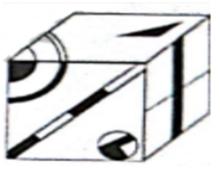
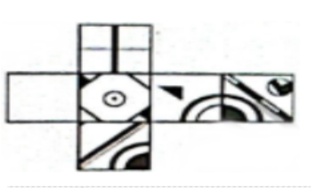
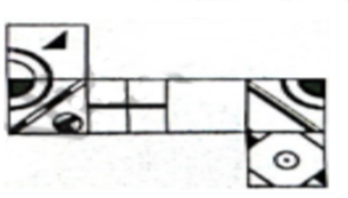
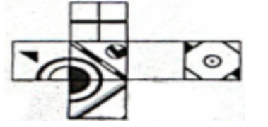
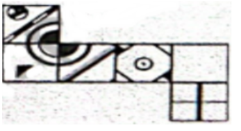
Identifique la figura que tiene un patrón distinto a las demás.
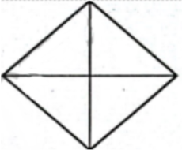
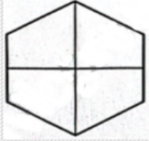
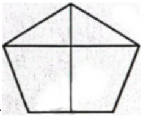
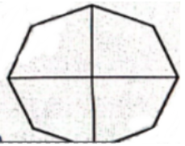
Identifique la figura que remplaza al signo de interrogación en la analogía.
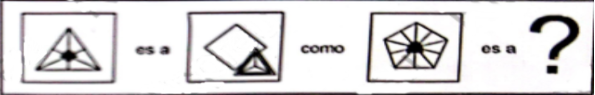
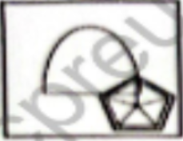
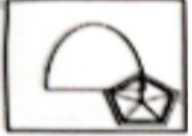
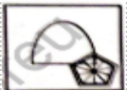
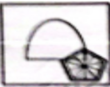
Identifique la figure que cumple con el patrón mostrado.
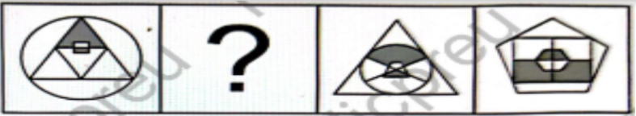
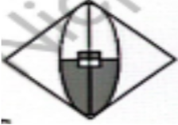
Identifique la vista indicada de la figura.
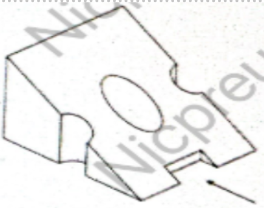
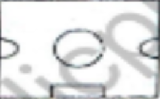
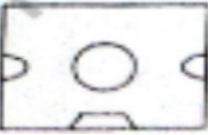
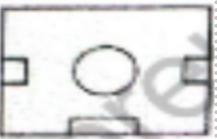
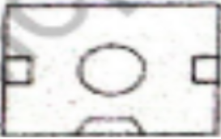
Identifique el cuerpo que se forma al armar el modelo
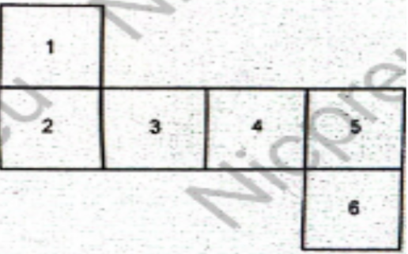
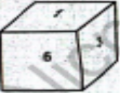
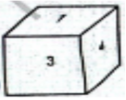
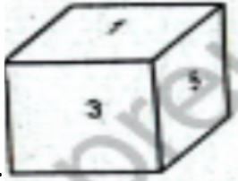
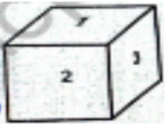
Identifique la figura que se obtiene al rotar la imagen de 135° en sentido antihorario.
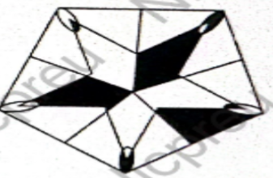
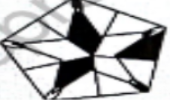
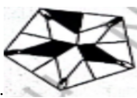
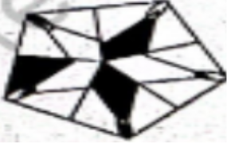
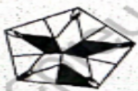
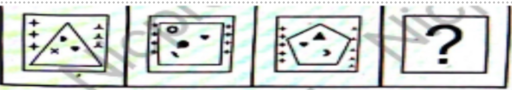
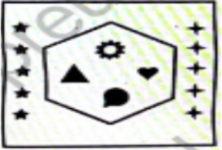
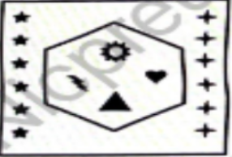
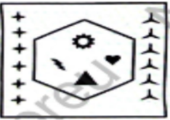
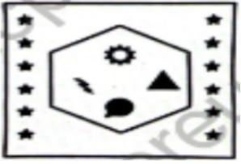
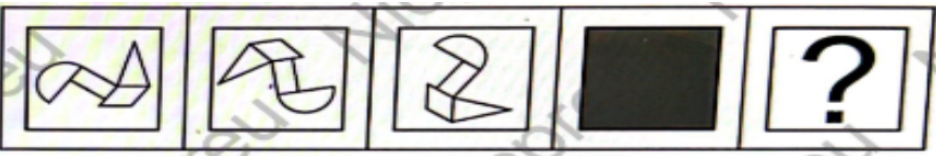
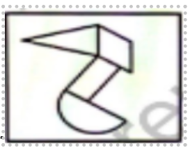
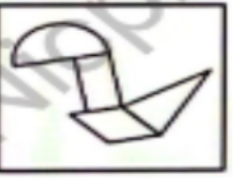
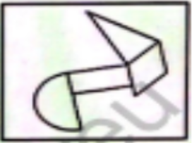
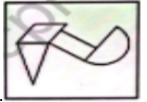
Identifique la figura que corresponde a la rotación de 90° del objeto.
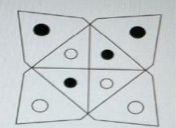
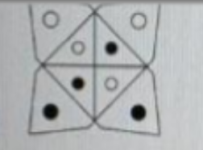
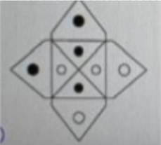
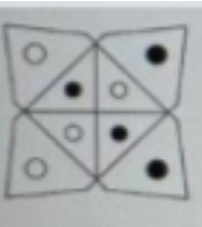
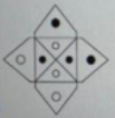
Identifique la vista superior de la figura.
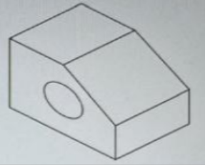
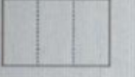